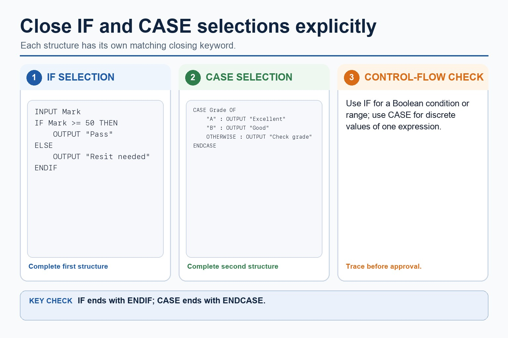

Cambridge AS9618 | Paper 2 | Section 11: Programming
IF, ELSE and CASE selection
Flexible-depth lesson
S11.04 | Learn from the diagrams, test the method, then choose the practice you need.
Choose a Quick, Full or Deep route
Quick route
Use the diagnostic, learning objectives, first worked example and foundation question. Stop once the learner can explain the central distinction accurately.
Full route
Use every knowledge-point material set, the worked method, the terminology check and all questions.
Deep route
Add the prerequisite refresher, ask learners to connect the concept checklist, discuss the labelled extension and complete a transfer question without a model answer.
Part 1 | optional depth
Prerequisite knowledge and quick diagnostic
Recall S9.06 before starting this lesson.
Give one accurate definition or method step before continuing. If it is missing, revisit only that prerequisite.
Open optional prerequisite refresher
The three basic algorithm constructs are sequence, selection and iteration (repetition); students must recognise and use each construct, including combinations of constructs.
Understand and use sequence, selection and iteration.
Part 2 | knowledge-point material sets
Learn each point through visuals
Follow the map, the three-part explanation and the concrete cue. Open precise wording only after the idea is clear.
Open the concept checklist and choose what to teach
Evidenceit is well suited when the count or bounds are known, but a pre-condition or post-condition loop is better when the number of repetitions depends on…
ChoiceUse IF statements, including the ELSE clause and nested IF statements
ReasonA FOR...NEXT loop is count-controlled
S11.04 diagrams
1 / 5
01
Diagram · 1 of 5
Use IF when a Boolean condition decides the route
Open text transcript
IF selection
Use when
Cambridge-style pattern
action is needed only when condition is true
IF Found THEN ... ENDIF
IF...ELSE
two paths are needed
IF Mark = 50 THEN ... ELSE ... ENDIF
02
Concrete example · 2 of 5
Pre-condition loop: check before running
Open text transcript
A WHILE loop checks its condition before each iteration and may run zero times.
Input Password before testing whether it differs from CorrectPassword.
Inside the loop, output the retry message and input a replacement Password.
Output Access granted only after the WHILE condition becomes false.
03
Diagram · 3 of 5
Post-condition loop: run once, then check
Open text transcript
A REPEAT...UNTIL loop checks its condition after executing the body.
Place INPUT Mark once inside REPEAT so each attempt obtains one value.
Do not add a duplicate INPUT before the loop.
Stop when Mark is between 0 and 100 inclusive.
04
Analogy / use · 4 of 5
Conditions decide the path

Open text transcript
Use IF for a Boolean condition or range and close it with ENDIF.
Use CASE for several discrete values of one expression and close it with ENDCASE.
Test marks 49, 50 and 51 to verify the pass boundary.
05
Comparison · 5 of 5
A decision inside another decision
Open text transcript
Nested selection
Discount example
IF Age = 18 THEN
IF Member = TRUE THEN
Discount <- 0.20
Discount <- 0.10
Discount <- 0.05
Trace the paths
Open precise syllabus wording
Use IF/ELSE/nested selection, CASE, count-controlled loops, post-condition and pre-condition loops.
Use IF statements, including the ELSE clause and nested IF statements; CASE statements; count-controlled loops; post-condition loops; and pre-condition loops.
Supporting diagram library
1 / 6
01
Diagram · 1 of 6
Use CASE for clear values of one expression
Open text transcript
CASE compares one expression with several discrete values.
Each listed value has its own action and OTHERWISE handles unlisted values.
Close the complete multi-way selection with ENDCASE.
02
Diagram · 2 of 6
The difference is when the condition is tested
Open text transcript
WHILE vs REPEAT
REPEAT...UNTIL
Condition checked
before the loop body
after the loop body
Minimum iterations
Continues when
condition is TRUE
03
Diagram · 3 of 6
A FOR loop has a counter, a start value and an end value
Open text transcript
FOR loop structure
General pattern
FOR Counter <- StartValue TO EndValue
// repeated statements
NEXT Counter
Concrete example
Total <- 0
FOR Count <- 1 TO 5
04
Diagram · 4 of 6
Java syntax is support, not Cambridge pseudocode
Open text transcript
Java support only
Cambridge-style pseudocode
WHILE Mark < 0 OR Mark 100
INPUT Mark
ENDWHILE
Java support example only
while (mark < 0 || mark 100) {
mark = scanner.nextInt();
05
Diagram · 5 of 6
A special value can stop the loop
Open text transcript
Initialise Total and input the first Number before WHILE.
While Number is not -1, add Number to Total and input the next Number.
The repeated input changes the condition and allows the loop to terminate.
The sentinel -1 stops the loop and is not included in Total.
06
Diagram · 6 of 6
Keep asking until the input is valid
Open text transcript
Validation pattern
REPEAT version
OUTPUT "Enter mark 0 to 100"
INPUT Mark
UNTIL Mark = 0 AND Mark <= 100
WHILE version
WHILE Mark < 0 OR Mark 100
OUTPUT "Invalid"
Apply the idea
Worked method
01Nested IF and CASE
02Total a fixed array
03Choose the loop from the stopping rule
04For a grade, an outer IF tests Mark = 80; its ELSE contains an inner IF testing Mark = 50; each IF closes with ENDIF.
05For a menu, CASE Choice OF maps 1, 2 and 3 to actions and OTHERWISE handles every unlisted value before ENDCASE.
06For Marks[1:30], set Total <- 0, use FOR Index <- 1 TO 30, add Marks[Index] to Total, close with NEXT Index and output Total after all thirty elements have been processed.
Open precise terminology and exam facts
Use IF statements, including the ELSE clause and nested IF statements; CASE statements; count-controlled loops; post-condition loops; and pre-condition loops.
Use IF...THEN...ELSE...ENDIF when a Boolean condition selects between paths. An ELSE clause supplies the false path. In nested IF statements, every inner and outer IF must be closed and the indentation must show which ELSE belongs to which IF.
Use CASE...OF...OTHERWISE...ENDCASE when one expression is compared with several discrete values. CASE is not a replacement for range or compound-condition decisions unless the stated values cover the requirement correctly.
A count-controlled loop uses FOR...TO...NEXT when the repetition count or inclusive counter range is known before the loop starts. The counter, start value and end value define the iterations; NEXT closes the loop.
Justify FOR from the problem: it is well suited when the count or bounds are known, but a pre-condition or post-condition loop is better when the number of repetitions depends on input or a stopping condition.
A WHILE...ENDWHILE loop is a pre-condition loop: it tests before the body and may run zero times. A REPEAT...UNTIL loop is a post-condition loop: it executes the body before testing and therefore runs at least once. A FOR...NEXT loop is count-controlled.
Select and justify the loop structure from the problem: use FOR when the count is known, WHILE when execution may be unnecessary and continuation is tested first, and REPEAT when the body must run once before a stopping condition can be tested. The justification must use the scenario, not only say that one loop is easier.
Beyond syllabus / 延伸知识（不要求背诵）
consistent style, modularity and automated tests reduce maintenance errors in larger programs.
Part 3 | select by learner need
Practice by question type
applyrecallfoundation2 marks
Question 1. When is CASE suitable?
Show answer and marking guidance
Answer: When one expression has several discrete values that map to separate branches.
Marking guidance: Award one mark for each distinct, technically accurate point or method step.
Common error: For the command word apply, perform that exact action; do not replace it with an unrelated fact.
explainexplainapplication2 marks
Question 2. How many ENDIF statements close two nested IF statements?
Show answer and marking guidance
Answer: Two: one closes the inner IF and one closes the outer IF.
Marking guidance: Award one mark for each distinct, technically accurate point or method step.
Common error: Do not repeat the same point in different words; each mark needs a separate idea or method step.
applyrecalltransfer2 marks
Question 3. Which structure may execute zero times?
Show answer and marking guidance
Answer: WHILE, because it tests its condition before the body.
Marking guidance: Award one mark for each distinct, technically accurate point or method step.
Common error: Do not copy the worked example unchanged; transfer the method and check it against the new context.
Related past-paper indexes
Reference
Marks
Command word
Question type
9618/22/W/25 Q1(a)
4
complete
recall
9618/23/W/24 Q1(a)
4
complete
recall
9618/22/W/24 Q5(c)
2
construct
diagram
Index only: Cambridge question and mark-scheme wording is not reproduced on this public course page.
Part 4 | close when ready
Summary and exam reminders
Summary
Define if, else and case selection with the exact technical vocabulary expected by the syllabus.
Use the lesson method on a fresh context and show the intermediate decision, representation or calculation.
Match the shape of the answer to the command word and the available marks.
Check the final answer against the scenario instead of repeating a memorised sentence.
Common error to correct
Students often think working Java automatically means good pseudocode. Correction: Paper 2 rewards clear Cambridge-style algorithm expression.
Exam technique
Follow the command word: state gives a fact; explain links a cause to a consequence; compare covers both sides.
Match the number of independent points or method steps to the available marks.
For if, else and case selection, use the exact technical term before applying it to the scenario.